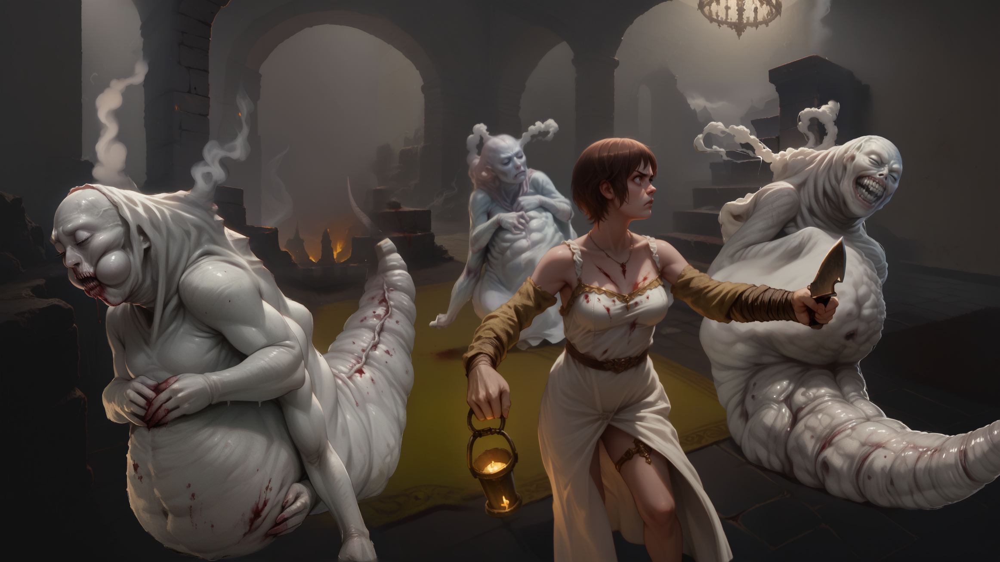
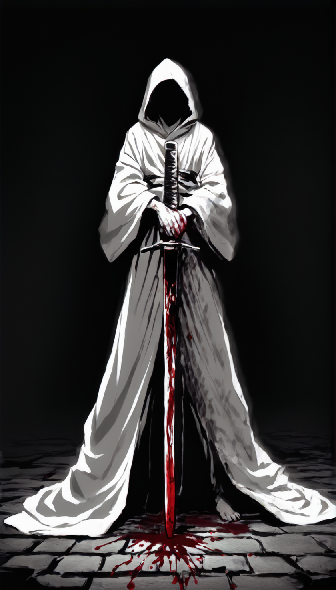
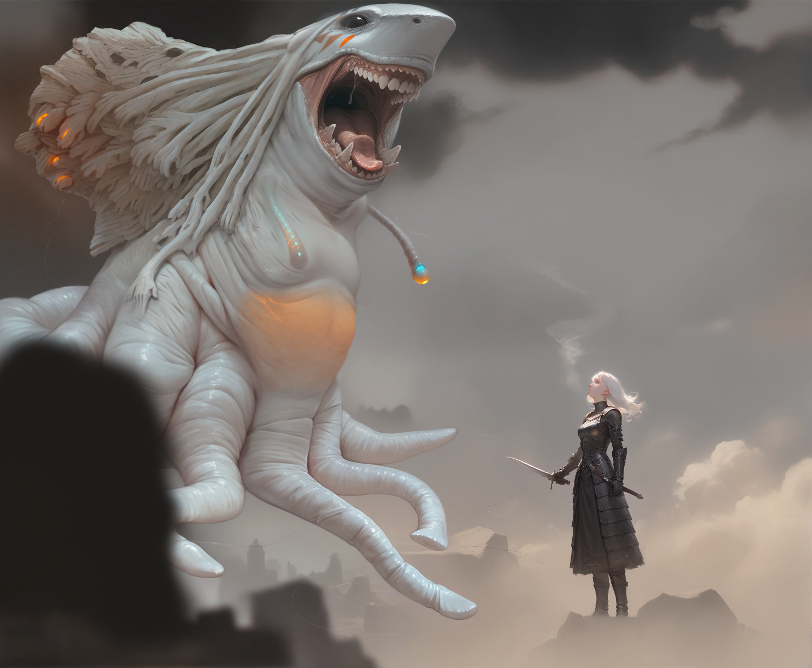
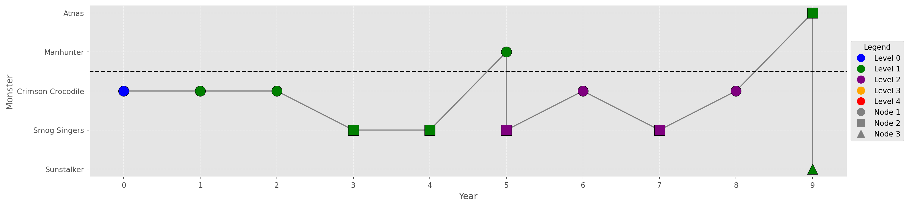
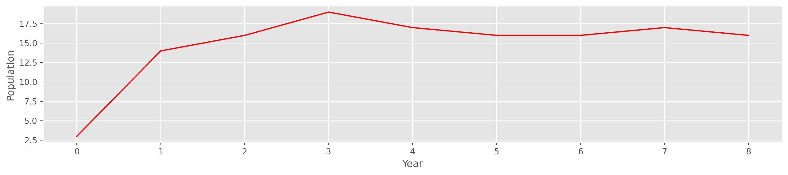

graph TB
A(Crimson Crocodile)
B(Smog Singers)
C(Sunstalker)
D(King)
A --> B
B --> C
C --> D
The Cereal Convention
A Kingdom Death Campaign Log
Settlement Overview
There is no sanity clause 1
Campaign Information
- Settlement Name: The Cereal Convention
- Campaign: People of the Lantern
- Boss: Watcher
- Finale: Gold Smoke Knight

Principles
| New Life | Death | Society |
|---|---|---|
| Protect the Young | Cannibalize | Accept the Darkness |
Nodes
Quarry
Nemesis
graph TB
A(Manhunter)
B(Atnas)
C(Black Knight)
A --> B
B --> C
Boss & Finale
graph TB
A(Watcher)
B(Gold Smoke Knight)
A --> B
Campaign Log
Prologue: Devour the White Lion
A purging of ashes down her hourglass figure
Inscribed on my heart; “Devour me, Colossus” 2

| Story Event | Innovation | Monster | Level | Deaths | Notable Event |
|---|---|---|---|---|---|
| Devour The White Lion | Language | Crimson Crocodile | 0 | 1 | The Crimson Crocodile caved in Patrick Bateman's chest with three repeated torso attacks |
Starting Characters
- Carrie
- Patrick Bateman
- Freddie Krueger
- Charlie (Hereditary)
Year 1: First Crimson Day
I walk a road, horizons change
The tournament’s begun 3
| Settlement Event | Story Event | Innovation | Monster | Level | Notable Event |
|---|---|---|---|---|---|
| First Crimson Day | First Story | Ammonia | Crimson Crocodile | 1 | On the Hunt, three people rolled criticals in the Gambler's Game of Death and gained +1 permanent Luck |

Year 2: Death of Song
And we sang dirges in the dark
The day the music died 4
| Settlement Event | Story Event | Innovation | Monster | Level | Notable Event |
|---|---|---|---|---|---|
| Jousting | Death of Song | Paint | Crimson Crocodile | 1 | Buffalo Bill narrowly defeated Freddie Kruger in a Jousting match |

Year 3: Velvet Fog
A choice of gold or velvet
Do I go on, or follow the crown in the smoke? 5

| Settlement Event | Story Event | Innovation | Monster | Level | Deaths | Notable Event |
|---|---|---|---|---|---|---|
| Velvet Fog | Inner Lantern | Smog Singers | 1 | 1 | Gave birth to five children in one year |
Year 4: Haunted Knight
And how can we win
When fools can be kings? 6

| Settlement Event | Story Event | Innovation | Monster | Level | Deaths | Notable Event |
|---|---|---|---|---|---|---|
| Haunted | Hooded Knight | Hovel | Smog Singers | 1 | 2 | Hooded Knight showed up, smoked two people, and left |
Year 5: The Hanged Plaguebearer
A flourishing plague consumes the masses
Emaciated figures dying in the streets 7
| Settlement Event | Story Event | Innovation | Monster | Level | Deaths | Notable Event |
|---|---|---|---|---|---|---|
| Plague | The Hanged Man | Scrap Smelting | Manhunter | 1 | 0 | Scored the Death Blow against the Manhunter and the settlement let Charlie die of the plague so they could innovate |
| Hands of Heat | Lantern Oven | Smog Singers | 2 | 1 | Still defeated first level 2 fight, despite hitting the trap 3 times and drawing the Legendary AI card, all within the first few turns |
Year 6: Unwanted Gifts
I was ignorant, I was worldly
I was shown into a lifetime’s experiences 8
| Settlement Event | Story Event | Innovation | Monster | Level | Notable Event |
|---|---|---|---|---|---|
| Knighting | Unwanted Gifts | Settlement Watch | Crimson Crocodile | 2 | Annabelle scored 5 wounds in one turn using the paired razor cymbal after we hit the trap turn 1 |
Year 7: Self-invited Lights in the Sky
This organic antenna mounts
As the esoteric crown of my vertebrae 9
| Settlement Event | Story Event | Innovation | Monster | Level | Deaths | Notable Event |
|---|---|---|---|---|---|---|
| Birth | Self-Invited Guests, Lights in the Sky | Symposium | Smog Singers | 2 | 1 | Ripley died during a blitzkrieg where we killed the monster after going only three times and a cursed Santa hat was found in the settlement |
Year 8: Under A Hooded Sun
A vile adversary approaches with haste
The immense conqueror hides the sun 10
| Settlement Event | Story Event | Innovation | Monster | Level | Deaths | Notable Event |
|---|---|---|---|---|---|---|
| Death | Promise Under The Sun, Hooded Knight | Family | Crimson Crocodile | 2 | 1 | Not getting the damn Crimson Fin again -_- |

Year 9: Atnas’s Dinner Bell
His sword was withdrawn; witness the falcon
Blood covers your face 11
| Settlement Event | Story Event | Innovation | Monster | Level | Deaths | Notable Event |
|---|---|---|---|---|---|---|
| It Rang | Atnas | 1 | 0 | |||
| Sunstalker | 1 | 0 |
Year 10: A Decade of Statues
The waves have pushed me to where I need to be 12
Timelines
Campaign Timeline

Population Timeline

Footnotes
Sandman Volume 3: The Doll’s House↩︎
Ne Obliviscaris - Devour Me, Colossus (Part I): Blackholes↩︎
King Crimson - The Court of the Crimson King↩︎
Don McLean - American Pie↩︎
Between the Buried and Me - Option Oblivion↩︎
Muse - Knights of Cydonia↩︎
The Faceless - Pestilence↩︎
Warforged - We’ve Been Here Before↩︎
Job For a Cowboy - Beyond the Chemical Doorway↩︎
The Faceless - Planetary Duality II: A Prophecies Fruition↩︎
Brand of Sacrifice - Casca↩︎
Between the Buried and Me - Foam Born: (B) The Decade of Statues↩︎
Copyright
John Vivian - 2024 - All Rights Reserved